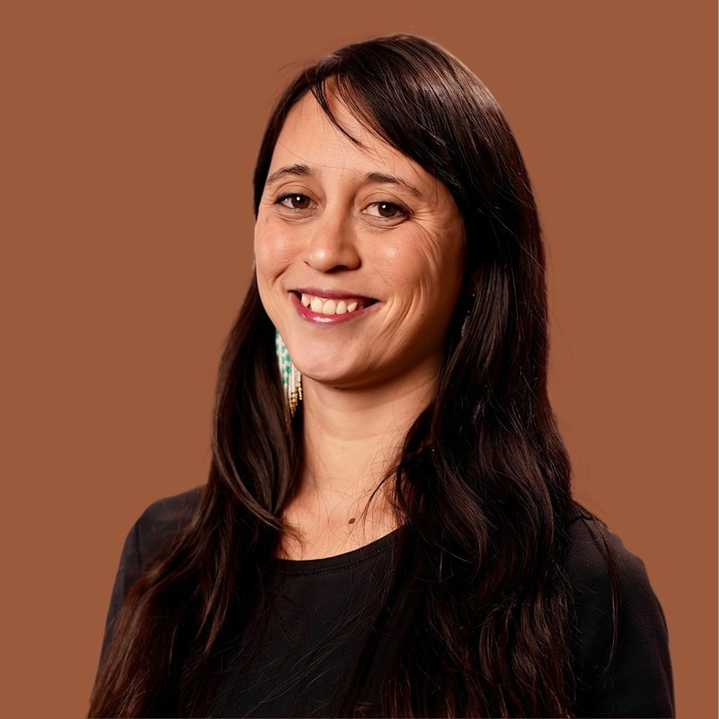

I have a dual inheritance, with a Filipino mother and a British father. I grew up immersed in two worlds, each with its own way of speaking, learning and belonging, and its own lens on the other. In many ways this was enriching and strengthening; in others it was fraught. Beneath the cultural differences lay deeper patterns, still simmering and unresolved: pro-imperialist ideologies, legacies of famine and poverty, and ancient strains of resentment and contempt on both sides.
To be a healthy descendant of such a divided system, I had to discover the tools and perspectives that could give every part of my ancestral story, the deep shadow and the light, its place.
That journey has given me rich spiritual experiences and profound moments of grief, rage and love. It has also brought me into close company with people from a vast range of political, financial, religious and cultural backgrounds: from Christian ministers to ecstatic dancers at Buddhafield festival; from multi generational land owners to off-grid nomads; and from successful CEOs to former asylum seekers turned inmates in maximum security prisons.
The longer story
Through my father, who was a devoted member of an international inter-faith movement called Subud, I received my core spiritual practice: the Latihan, at the age of seventeen. More than twenty years later, this continues to bless my life with a deep feeling of connection to the Divine, and provides me with a way to navigate times of difficulty and change. It also laid the foundations for my later encounters and work in Family Constellations, by allowing me to access perspectives that go beyond my personal point of view, to a greater truth that rests in Love.
While studying Literature and then an MA in Philosophy at the University of Kent in Canterbury, I found myself drawn to the ancient atmosphere of the cathedral: the oldest in England, founded in 597 AD by St Augustine. What started as a few visits evolved into a regular habit of attending morning mass, evensong, and the weekly Sunday Service. It became my spiritual sanctuary; a place where I would dwell, contemplate, pray, write, sit and rest. I became close friends with many in the Christian community, and engaged in deep theological discussions with the clergy -all while simultaneously writing dissertations for my studies on Thoreau, Emerson, Donne, Milton, Hegel, Wittgenstein, Marx, Heidegger (and more).
During the end of my studies I began volunteering in the Dover Detention Centre as well as the HMP Foreign National Prison in Canterbury (one of only two of its kind at the time in the UK). I would visit, simply to hear the stories of the people inside, and to offer support through English Language lessons. That turned into a two-year career after my move to Victoria, Australia, where I worked as the Project Manager of a mentoring support program for former refugees from the Horn of Africa within maximum security prison systems. The years spent in close company with people who had committed dreadful acts of violence, yet were also suffering from extreme mental health disorders born from trauma, displacement, and a fractured sense of belonging, brought home to me the many paths that can lead us to the darkest parts of our nature.
Looking back, each of these was a different way of asking the same questions: what lies beyond my own point of view, and what happens to those who have been excluded, or who have lost their place? How can opposing worlds coexist? And what are the teachings and sources of healing we must draw upon, in order to be well, and able to freely follow our deeper sense of purpose?
It was in 2014 that I met Laurence Shorter (now my husband for eight years), who introduced me to Family Constellations. I was hooked at once. It offered what no other therapy had: a way of seeing, in real time, the hidden forces and dynamics that extended beyond the personal and into a much bigger story. I needed that wider view to understand the laws of belonging that each side of my family had been following, and make sense of the internal rift this had caused in my own being.
I also began to recognise the people my family had left out: relatives lost to memory, who started visiting my dreams and then appeared in constellations. I began to see the stories of my ancestors on both sides, and what had brought my parents together.
During this time I became a mother, which brought a great deal of unresolved family material to the surface. It also led me to homeopathy, through a retired practitioner who became my mentor. He gave me a core principle I still use today, that of holding a ‘witnessing’ space for whatever is emerging, and guided me through transgenerational healing processes that wove together with my constellations work and the latihan.
All of this is what I bring to my work today, along with the learning from my own healing journey. I have spent nearly two decades working with people in need, and twelve years in the constellations world, holding workshops and one to one sessions since 2023.
My core training is in Family Constellations (Foundation and Applied, CSC). Alongside it I have trained in Narrative Therapy, Clean Language, Resonant Attention and Olivier Mythodrama. Together they shape how I listen, the questions I ask, and how I hold a space for both individuals and groups.
Whatever your tribe, whatever your need, I am here to serve.
Occasional notes on Family Constellations, and news of upcoming workshops and events. Unsubscribe at any time.